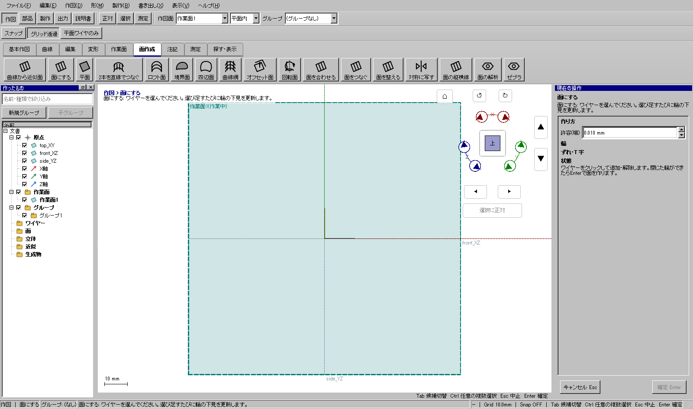
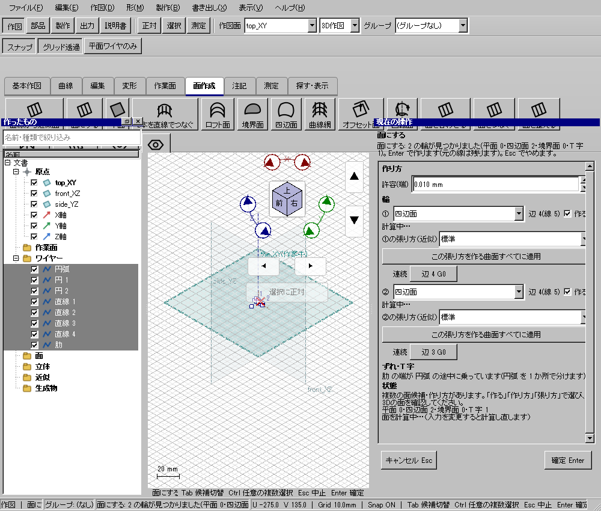
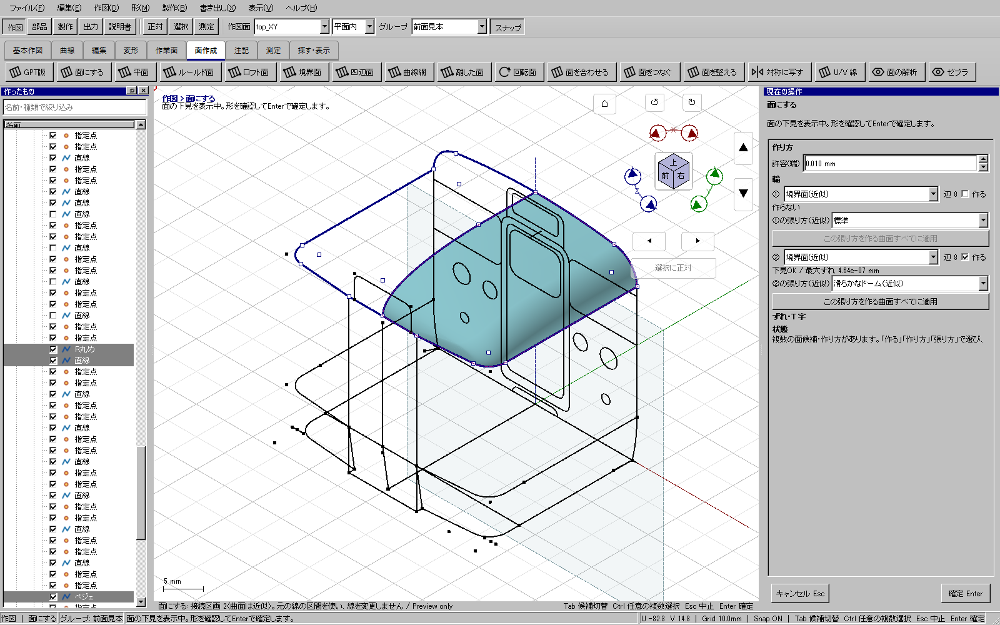
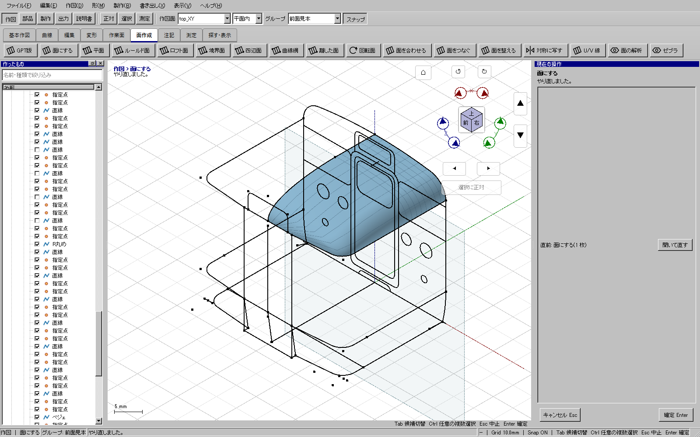
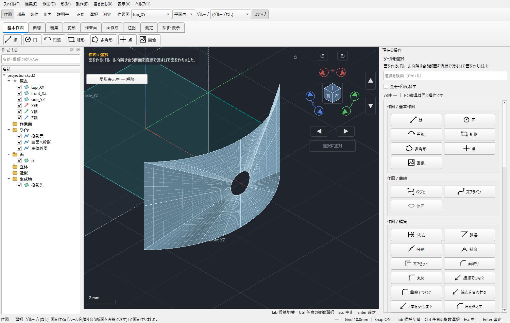
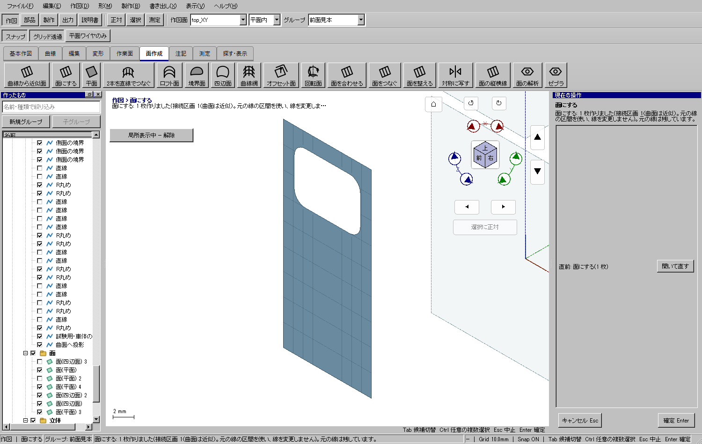

外枠から窓穴のある面を作る
外枠から窓穴のある面を作る
使う機能：面にする
外周と内周の閉輪郭から面を作ります。輪が複数ある場合は作るチェックで面の候補を選び、内側を窓穴として残すか下見で見ます。
外枠を満たし、内側の輪郭を穴として残す。曲面では投影先との一致も確認する。
1 準備 — 元の図形から作る
外周の閉じたワイヤーと内側の窓輪郭を同じ面上に用意する。
まだ用意できていなければ、次の手順を先に行ってください。既にモデルがある場合も、例の座標・大きさ・面の向きを自分のモデルへ読み替えます。
- 幅20・高さ10mmの閉じた矩形を作る — 図形の作成から順に練習できます。
- 線・面・部品を取り違えずに選ぶ — 図形の作成から順に練習できます。
練習前にKCD2を別名保存します。数値の長さはmm、角度は度です。平面内のu/vと世界XYZを区別します。
2 使う道具を開く — 押す場所
- 作図 → 面作成 → 面にする
別の入口：Ctrl+K → 面にするを検索 → 候補の用途を確認して開きます。別モードなら「全モードから探す」をオンにします。

3 操作手順 — 一つずつ進める
外周と内周を作る
まず同一平面の20×10mm外枠と、その内側の閉じた窓輪郭を作ります。曲面例は投影先上に一致した輪郭を使います。
画面で確認：見た目の重なりでなく、実際に閉じた輪であることを確認します。
面にするを開く
「作図 → 面作成 → 面にする」を押します。外枠と内周を追加し、端許容を0.010mmから確認します。
画面で確認：許容を大きくして隙間を隠す前に、元の端点を修正します。
見つかった輪を読む
右ペインの「輪」で各候補の辺数・作り方・作るチェックを確認します。不要な候補だけチェックを外します。
画面で確認：複数候補がある時は、選んだ輪と3Dの強調を照合します。
ずれと枝を処理する
「ずれ・T字」で離れた端や枝分かれを読みます。「寄せる」はどこを動かすか確認し、元線を変えない判断なら「そのまま」を選びます。
画面で確認：異なる3D位置を無理に平面へ押し込む操作とは区別します。
張り方を比較する
外周だけの境界面、断面を生かすドームなどを切り替えます。外周と内部線の役割を見て、選んでいない領域が増えていないか確かめます。
画面で確認：中央だけのこぶ、端の直線化、ねじれを複数視点で見ます。
窓穴を見る
内周が塗りつぶされず穴になり、外枠の側が面として残ることを確認します。入力線と面が重なる場合は角度を変えます。
画面で確認：窓の中の小面だけが作られているなら、外周・内周と作る候補を見直します。
確定して比較する
Enterで確定し、元ワイヤーを一時的に隠して生成面を見ます。Ctrl+Zで全体を戻せることを確認し、KCD2へ保存します。
画面で確認：薄い参照面であり、まだ板厚や体積はありません。
4 設定する欄と数値
ボタン名・欄名と、今回使う値を対応させてください。項目が出ていない場合は作り方・モードが合っているか確認し、ペイン内をスクロールします。
| 見る欄・役割 | この例の設定と意味 |
|---|---|
| 端許容 | 0.010mm |
| 輪 | 作る候補を選択 |
| ずれ・T字 | 寄せる／そのまま |
| 張り方 | 候補比較 |
選択の確認：役割欄の名前と3Dの強調を照合します。重なって拾いにくい時はTabで候補を替えます。全体を使う例では左一覧の要素名を選び、3Dの1辺選択と区別します。

この実画面は既存操作試験の一場面で、下の数値例の完成画像とは限りません。設定・選択の操作画面。具体的な完成例は段階写真のある作業例を参照してください。
5 確定して結果を確認
必要な入力と数値をそろえ、下見と状態欄を確認して、右ペインの作成・適用・確定ボタンを押します。Enter対応の道具はEnterでも確定できます。
外枠を満たし、内側の輪郭を穴として残す。曲面では投影先との一致も確認する。
形を作る操作では、元と結果の名前を分けて一覧で確認し、必要に応じて元を一時非表示にします。表示だけの機能では形状や要素数を変えることが目的ではありません。
実例の準備から完成まで
以下は具体的な別のモデルで記録した実画面です。表示された数値と、上の練習課題の数値は区別してください。



6 取消・やり直し・保存
Escで未確定の入力を取り消します。道具を終えるには選択（V）か別の道具へ切り替えます。確定済みの図面変更はCtrl+Z、やり直しはCtrl+Yです。
モデルの編集正本はKCD2、説明書の編集正本はKCIです。外部へ出力するだけの機能では、出力ファイルと編集元を両方残してください。
進めない場合 — 症状から戻る場所を探す
| 起きていること | 確認して直す場所 |
|---|---|
| 閉じた輪がない | 端点の実座標とT字枝を確認 |
| 窓が面でふさがる | 内周と外周の関係・曲面との一致を確認 |
この機能の入力条件：線を1つ以上選んでください。
計算中は処理表示を見ます。失敗が出たら、対象・入力条件を変えずに何度も押すのでなく、案内にある対象と条件を確認します。
別の方式・条件で使う
平面の窓穴
まず主手順で入力の役割を確認し、この例の値と操作へ置き換えます。
この例の準備：同一平面の外枠と内側の閉じた矩形
外周20×10mmの中へ、各辺から余白のある小さな閉矩形を置きます。両方を選び、外周側が塗られ内側だけ抜ける下見を見ます。窓の小面を作る候補を誤選択しないでください。
- 両輪郭を選ぶ
- 面にする
- 穴を確認
- Enter
結果の見分け方：窓穴のある面

曲面の窓穴
まず主手順で入力の役割を確認し、この例の値と操作へ置き換えます。
この例の準備：外枠と支持面上に投影した閉輪郭
先に車体面へ窓を投影して閉輪郭を作ります。外周と内周が同じ支持面上にあることが必要で、別平面の窓線が見た目で重なるだけでは穴になりません。
- 外枠・内輪郭を追加
- 候補面と穴を確認
- Enter
結果の見分け方：支持面上の内輪郭が穴になる
滑らかなドーム
まず主手順で入力の役割を確認し、この例の値と操作へ置き換えます。
この例の準備：立体の外枠と境界までつながる中央の曲線
中央の曲線が外枠まで届くことと、選んだ領域を確認してドームの張り方を比較します。選んでいない半分を自動で足す手順ではありません。複数視点で小さなこぶを見ます。
- 輪を確認
- 通る線を確認
- 張り方ドーム
- 下見
- Enter
結果の見分け方：選択領域に断面の丸みを広げた面
参考画面の出典と確認範囲
試験名：HP-LF-10 オーナーの atama の 8 本(円弧 4・直線 4、T 字)を面にすると四辺面が 2 枚でき、面に格子が乗る。試験全体の結果：passed。画像はコマンド呼出し直後で、入力待ち・下見の場合もあります。各段階の完成証拠ではありません。